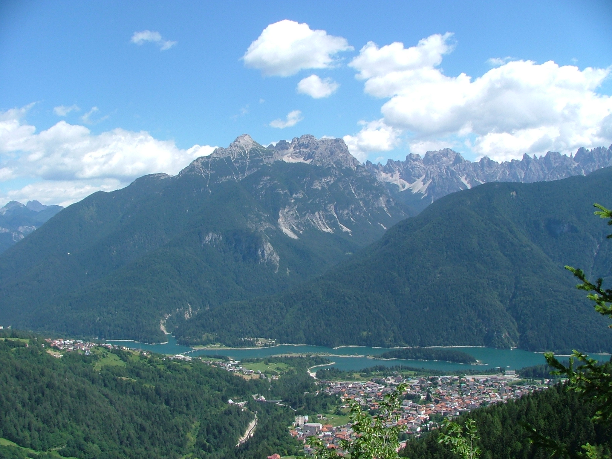
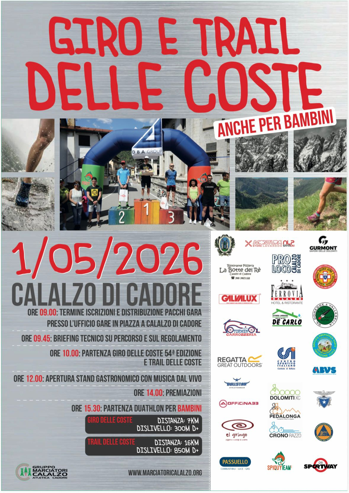
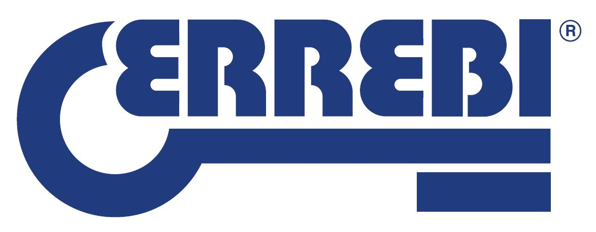
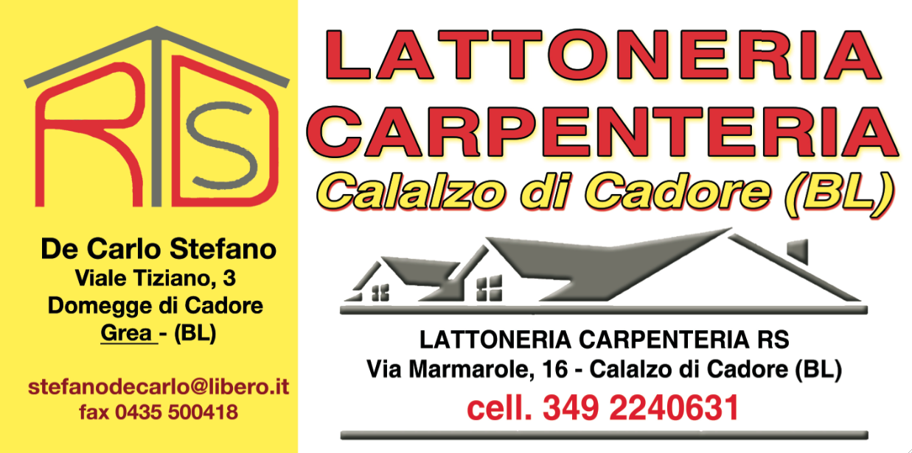

Prossima gara
Giro e Trail delle Coste
1 MAG
2027
Calalzo di Cadore, partenza in piazza
Data da confermare
7 kmGiro, 300 m D+
16 kmTrail, 850 m D+
Prossima gara
Giro e Trail delle Coste
1 MAG
2027
Calalzo di Cadore, partenza in piazza
Data da confermare
Siamo il Gruppo Marciatori Calalzo – Atletica Cadore. Organizziamo il Giro e il Trail delle Coste e il Cadore Km Verticale, e alleniamo ragazze e ragazzi dai 7 ai 18 anni. Alle nostre gare ora ti iscrivi online.
Il logo in questa bozza è un ridisegno provvisorio, da sostituire con il file originale.
Due appuntamenti all'anno. Per ognuno trovi il volantino, tutte le informazioni, l'iscrizione online e le edizioni passate.

Il 1° maggio a Calalzo di Cadore: due percorsi con partenza insieme dalla piazza, poi pranzo, musica e premiazioni.

55ª edizione del Giro, sabato 1 maggio 2027 (data da confermare). Il Trail segue il Giro fino a Rizzios, poi passa da Grea e Vallesella.
7km
300 m di dislivello
Il percorso classico.
16km
850 m di dislivello
Fino a Rizzios, poi Grea e Vallesella.
Tutto in piazza a Calalzo di Cadore.
Il pomeriggio del Giro delle Coste, per chi ha meno di 14 anni: un tratto di corsa e uno in mountain bike, da soli o in coppia.
Classifiche e foto di ogni edizione: le foto si scaricano una per una o tutto l'album. Le trovi anche nell'archivio gare.
Mille metri di salita in 2,7 km, da Vallesella alla Croda, con le Marmarole e gli Spalti di Toro davanti.
Volantino 2027 in arrivo
Lo pubblichiamo qui appena è pronto.
Classifiche e foto di ogni edizione: le foto si scaricano una per una o tutto l'album. Le trovi anche nell'archivio gare.
Tutte le edizioni passate, anno per anno: classifiche in PDF e foto da scaricare. Scegli la gara e poi l'anno.
Quattro passaggi. Il certificato medico puoi caricarlo adesso o mandarlo più tardi, e scegli tu se pagare online, con bonifico o in contanti al ritiro del pettorale.
Hai già un'iscrizione e devi solo mandare il certificato? Caricalo qui.
Da aprile a novembre alcuni dei nostri migliori atleti allenano ragazze e ragazzi dai 7 ai 18 anni, in un ambiente sano e stimolante. Ci prepariamo insieme al Campionato Cadorino, al Provinciale e ad altre gare provinciali e regionali.
7–11 anni (fascia d'età da confermare)
12–18 anni (fascia d'età da confermare)
Per iscrivere tuo figlio o tua figlia, o solo per chiedere informazioni.
Il Gruppo Marciatori Calalzo fu fondato nel 1973 da alcuni appassionati del podismo locale, capeggiati da Marte Gaggio. In breve tempo il Gruppo ottenne apprezzabili risultati in particolare nella corsa in montagna, dove occupa ancora oggi una posizione di eccellenza nel panorama provinciale e regionale.
Guidato dal presidente Marte Gaggio, nel 1980 a Firenze il sodalizio ha conquistato il titolo nazionale a squadre di corsa in montagna, e per tre volte il primo posto nella "24 ore di S. Martino", gara a squadre sulla pista di atletica di Belluno. Numerose le vittorie dei suoi atleti, individuali e di squadra, in staffette e gare a coppie.
Nel 2003 al nome storico si è aggiunto "Atletica Cadore": oggi siamo la società di riferimento per i podisti di tutto il Centro Cadore.

Safeguarding. Per segnalazioni sulla tutela di atleti e minori scrivi a Sandra De Monte Pangon, responsabile safeguarding:




Sede
Via Marmarole 1
32042 Calalzo di Cadore (BL)
Alla sede è disponibile anche una copia del codice di condotta.